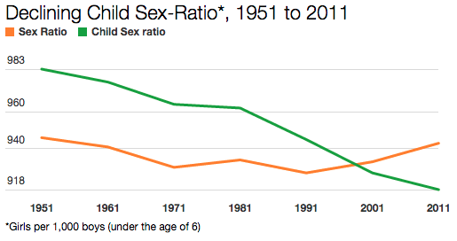

Women's empowerment is as important as male's empowerment in India. But there is no such thing as male's empowerment, that means you have a point. So assuming, women need empowerment more than men, I suggest we look at some basic facts and trivia about women in India.

Child Sex Ratio (0-6 years):
The child sex ratio has dropped from
945 females per 1000 males in 1991 to
927 females per 1000 males in 2001 and
918 females per 1000 males in 2011.
The United Nations Children’s Fund, estimated that upto 50 million girls and women are ‘missing’ from India’s population because of termination of the female foetus or high mortality of the girl child due to lack of proper care.
Women as Workers:
Female share of non-agricultural wage employment is only 17%. Participation of women in the workforce is only, 13.9% in the urban sector and 29.9% in the rural sector.
Women’s wage rates are, on an average only 75% of men’s wage rates and constitute only 25% of the family income. In no Indian State do women and men earn equal wages in agriculture. Women occupy, only 9% of parliamentary seats less than 4% seats in High Courts and Supreme Court less than 3% administrators and managers are women
Women and Education:
Close to 245 million Indian women lack the basic capability to read and write. Adult literacy rates for ages 15 and above for the year 2000 were female 46.4% and male rate of 69%.
Women and Health:
The average nutritional intake of women is 1400 calories daily. The necessary requirement is approximately 2200 calories 38% of all HIV positive people in India are women yet only 25% of beds in AIDS care centres in India are occupied by them 92% of women in India suffer from gynecological problems 300 women die every day due to childbirth and pregnancy related causes
The maternal mortality ratio per 100,000 live births in the year 1995 was 440. Now if I start copy-pasting 'Crimes against Women' too. It'll just look like a 'pity party' I am conducting for Indian women. Because, that bad are the numbers, almost makes me shameful for being an Indian.
I understand these are old numbers and it is over a decade these things happened. I also agree, we have bettered ourselves in many ways in achieving women empowerment in these 14 years. But not enough to not worry about it, not even close. There is so much to do and it is important to note that men can do wonders for this cause.
The day one doesn't see the need to ask this question, that is the day I will be proud of being an Indian man, that is the day I will know that we have empowered together.
So yes, looking at these facts, the importance for women empowerment is self explanatory. Now let's start doing something about it!